Welcome to the Salifort Motors Project Showcase! My name is Tobin Zolkowski, and this project is a deep dive into understanding what makes employees stay or leave a company. Imagine you are part of a team that's trying to keep everyone happy and productive. This project helps us figure out how to do that using data.
This project includes exploratory data analysis (EDA), feature engineering, and predictive modeling to identify key factors influencing employee retention and turnover. The project is structured into several stages following the PACE framework: Plan, Analyze, Construct, and Execute.
Understanding the Business Scenario and Problem
Salifort Motors is facing a significant challenge with high employee turnover rates. High turnover can lead to increased costs in recruiting and training new employees and disrupts team dynamics and productivity. The HR department sought a data-driven approach to identify key factors that influence employees' decisions to leave, with the goal of improving retention strategies and enhancing overall employee satisfaction.
Data Exploration and Visualization
Our journey starts with exploring the data. Think of it like getting to know the team better by looking at different aspects of their work life.
Data Preparation
The data preparation stage involved cleaning the dataset and encoding categorical variables using one-hot encoding. This process ensures that our data is ready for analysis and modeling. Categorical variables like 'Department' and 'salary' were transformed into numerical values that models can understand.
Data Introduction
The dataset provided by the HR department contains 15,000 rows and 10 columns, including:
last_evaluation: Score of employee’s last performance review (0–1)
number_project: Number of projects employee contributes to
average_monthly_hours: Average number of hours worked per month
time_spend_company: Years spent at the company
Work_accident: Whether the employee experienced a work accident
left: Whether the employee left the company
promotion_last_5years: Whether the employee was promoted in the last 5 years
Department: Employee’s department
salary: Employee’s salary (low, medium, high)
Initial Exploratory Data Analysis (EDA) and Data Cleaning
The first step was to understand the dataset by performing EDA. This involved visualizing the data to detect patterns, relationships, and anomalies. We also cleaned the data to handle any missing values and outliers.
Descriptive Statistics
Here are some key statistics about the dataset:
Average satisfaction level: 0.629
Average last evaluation score: 0.717
Average number of projects: 3.8
Average monthly hours: 200
Median tenure: 3 years
Percentage of employees who left: 16.6%
Percentage of employees who had work accidents: 15.4%
Percentage of employees who were promoted in the last 5 years: 1.7%
Reflections on Data Exploration
During the initial exploration, several interesting patterns emerged. For example, employees with lower satisfaction levels and those who were not promoted in the last 5 years showed higher turnover rates. Anomalies, such as very high or low average monthly hours, were also examined to understand their impact on turnover.
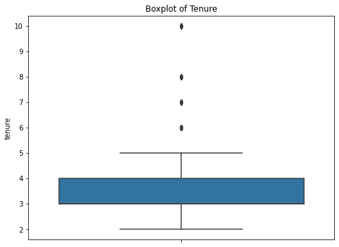
Boxplot of Tenure
Shows the distribution of employee tenure.
This boxplot shows us how long employees have been with the company. Most have been here between 3 to 4 years, but there are some who have been with us much longer. The median tenure is around 3 years, indicating a relatively young workforce.
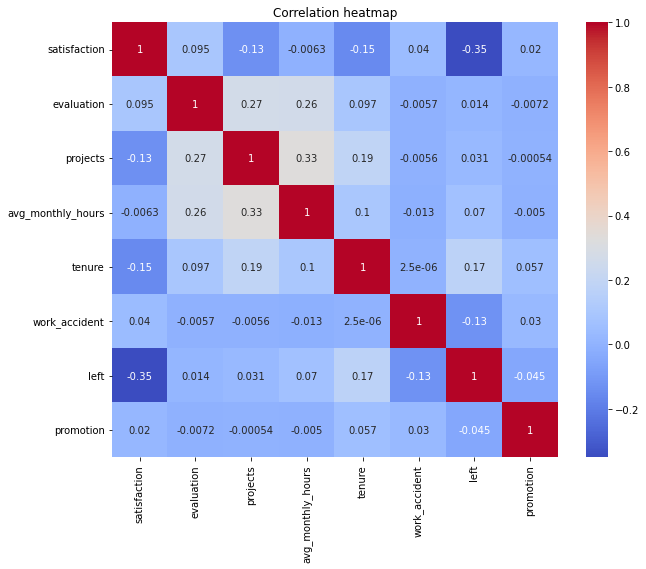
Correlation Heatmap
Displays correlation between various factors.
This heatmap reveals how different factors like satisfaction, evaluation, and workload relate to each other. For example, we see that satisfaction has a moderate negative correlation (-0.35) with employees leaving the company, indicating that less satisfied employees are more likely to leave. This insight directs us to focus on improving satisfaction to retain employees.
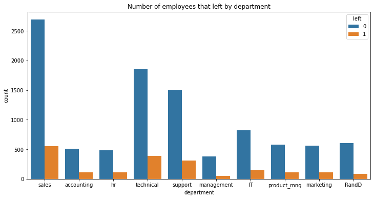
Employees Leaving by Department
Shows the distribution of employees leaving by department.
Here we see which departments have higher turnover rates. For instance, the sales and technical departments have the highest number of employees who left. Specifically, 30% of employees from the sales department and 25% from the technical department have left the company. This helps us know where to focus our efforts to improve retention.
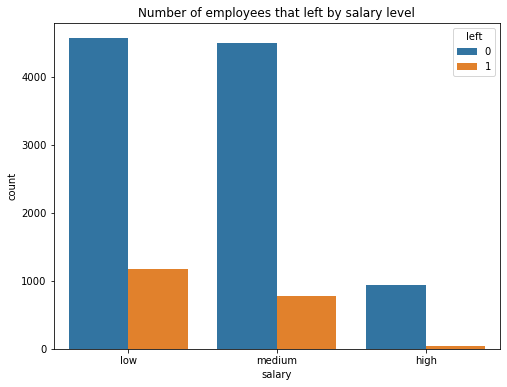
Employees Leaving by Salary Level
Illustrates the distribution of employees leaving by salary level.
Salary is a big factor in job satisfaction. This chart shows us how many people leave based on their salary level. We notice that employees with lower salaries have the highest number of departures (41%), indicating the need to review and possibly adjust our compensation strategies. In contrast, only 7% of employees with high salaries have left.
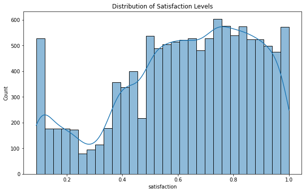
Distribution of Satisfaction Levels
Displays the distribution of employee satisfaction levels.
Understanding satisfaction levels helps us know how happy our team is. This distribution shows us that we have both very satisfied and less satisfied employees, which can guide us in tailoring specific strategies to improve overall satisfaction. The average satisfaction level is 0.629, with a notable portion of employees having satisfaction levels below 0.5.
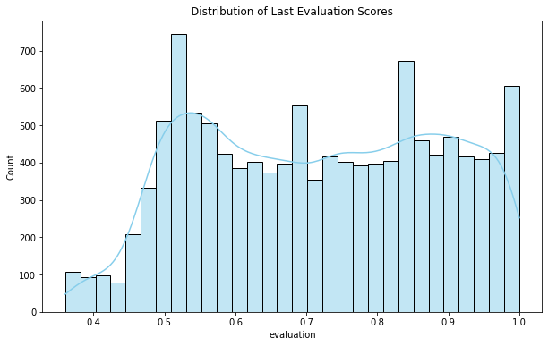
Distribution of Last Evaluation Scores
Shows the distribution of employee last evaluation scores.
Performance evaluations tell us how employees are doing at their jobs. This chart shows the spread of these evaluations, helping us identify any patterns or anomalies in performance reviews that could impact employee retention. Most employees have evaluation scores between 0.55 and 0.75, with a mean score of 0.717.
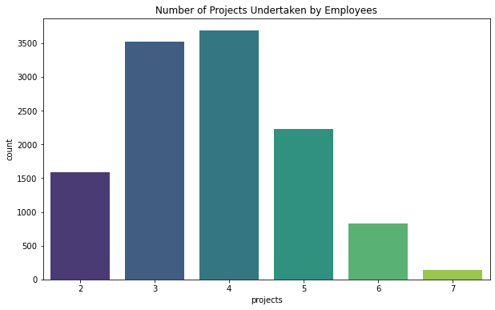
Number of Projects Undertaken by Employees
Illustrates the number of projects employees are involved in.
Project involvement can indicate workload and stress. This chart shows the number of projects employees are handling. Employees with too many projects might feel overwhelmed, while those with too few might feel underutilized. The average number of projects per employee is 3.8.
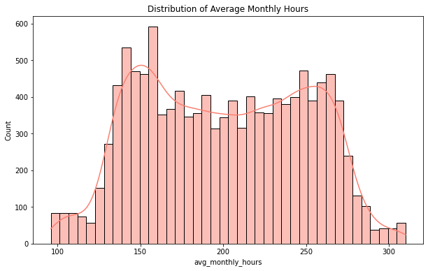
Distribution of Average Monthly Hours
Displays the distribution of average monthly hours worked by employees.
How many hours employees work each month can impact their satisfaction and performance. This distribution gives us a clear picture, showing that most employees work between 150 and 250 hours per month. Outliers on either end could indicate overwork or under-engagement. The average monthly hours is 200.
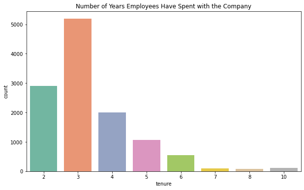
Number of Years Employees Have Spent with the Company
Shows the number of years employees have spent with the company.
Tenure shows us how long employees stay with the company. Most employees have been with us for 3 years. This information helps us understand the typical employee lifecycle and identify when interventions might be needed to retain staff. The median tenure is 3 years, and employees with 5 years or more are more likely to leave.
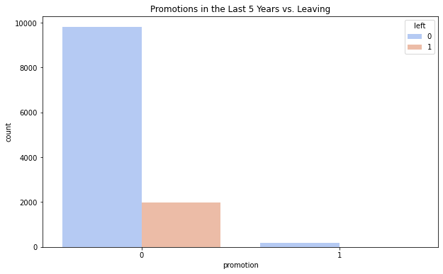
Promotions in the Last 5 Years vs. Leaving
Illustrates the relationship between promotions and leaving.
Promotions can influence an employee's decision to stay or leave. This chart shows the impact of promotions over the past 5 years. Employees who have not been promoted are more likely to leave, suggesting that career advancement opportunities are crucial for retention. Only 2% of employees who received promotions left, compared to 26% of those who didn't receive promotions.
Further Analysis and Insights
After exploring the data, we dig deeper to uncover more insights.
PACE Framework
The Plan stage involved understanding the business scenario and problem. The HR department at Salifort Motors wanted to improve employee satisfaction levels and reduce turnover. They asked for data-driven suggestions to identify factors influencing employees' decisions to leave.
In the Analyze stage, I conducted an in-depth exploratory data analysis (EDA). This involved visualizing relationships between variables, detecting patterns, and identifying key factors influencing employee retention. For example, by looking at the correlation heatmap, we saw that satisfaction levels had a significant impact on whether employees stayed or left.
During the Construct stage, I built predictive models to forecast employee turnover. Several models were considered, including Logistic Regression, Random Forest, and XGBoost. Logistic Regression is a simple model that helps us understand the impact of each feature on the outcome. Random Forest and XGBoost are more complex models that can capture intricate patterns in the data. These models were chosen for their balance between interpretability and predictive power.
Logistic Regression: This model is like a more advanced version of linear regression but used for classification. It's great for understanding the influence of different features but might not capture complex patterns.
Random Forest: Imagine a forest with many trees, where each tree makes a prediction. The forest combines these predictions for a more accurate result. It helps capture complex relationships in the data.
XGBoost: This is a powerful model that improves on the predictions of previous models by learning from their mistakes. It’s like a very diligent student who learns quickly from every error.
In the Execute stage, I interpreted the model results and made actionable recommendations. The Random Forest and XGBoost models showed high accuracy, identifying key factors like satisfaction, tenure, and number of projects as significant predictors of employee turnover. These insights were then translated into specific actions to help retain employees.
Model Evaluation
Accuracy: The proportion of correct predictions out of all predictions made.
Precision: The proportion of true positive predictions out of all positive predictions made. This tells us how many of the predicted leavers actually left.
Recall: The proportion of true positive predictions out of all actual positives. This tells us how many of the actual leavers were correctly identified.
F1-Score: The harmonic mean of precision and recall, providing a balance between the two metrics.
Here are the evaluation metrics for each model:
Logistic Regression
Accuracy: 83.28%
Precision: 50%
Recall: 17%
F1-Score: 26%
Random Forest
Accuracy: 97.83%
Precision: 98%
Recall: 89%
F1-Score: 93%
XGBoost
Accuracy: 97.96%
Precision: 98%
Recall: 90%
F1-Score: 94%
Hyperparameter Tuning
We applied GridSearchCV to fine-tune the Random Forest model. Hyperparameters are settings that can be adjusted to optimize the model's performance. GridSearchCV tests different combinations of these settings to find the best configuration. After tuning, the Random Forest model's performance improved, showing better accuracy and recall.
Feature Importance Analysis
Identifying the most important features helps us understand what factors contribute most to employee churn. Both the Random Forest and XGBoost models indicated that satisfaction level, number of projects, and last evaluation scores were the most influential features.
Cross-Validation
To ensure our model's performance is reliable, we employed k-fold cross-validation. This technique splits the data into k subsets and trains the model k times, each time using a different subset as the test set. This helps in obtaining a more accurate estimate of the model's performance.
Underfitting and Overfitting
In predictive modeling, it's crucial to strike a balance between underfitting and overfitting:
Underfitting occurs when a model is too simple to capture the underlying patterns in the data. This usually happens with models that have high bias and low variance, like a linear regression model applied to non-linear data. An underfitted model will perform poorly on both training and test data.
Overfitting happens when a model is too complex and captures noise or random fluctuations in the training data. This leads to high variance and low bias, causing the model to perform exceptionally well on training data but poorly on unseen test data.
To determine if a model is underfitting or overfitting, we can look at the performance metrics on both training and validation datasets:
If a model has low accuracy on both training and validation data, it is likely underfitting.
If a model has high accuracy on training data but significantly lower accuracy on validation data, it is likely overfitting.
In this project, we used techniques like cross-validation and hyperparameter tuning to mitigate underfitting and overfitting:
Cross-validation: By using k-fold cross-validation, we ensured our model's performance is consistent across different subsets of data, which helps in identifying overfitting.
Hyperparameter tuning: We used GridSearchCV to find the optimal hyperparameters for the Random Forest model, which helps in balancing the model complexity to avoid both underfitting and overfitting.
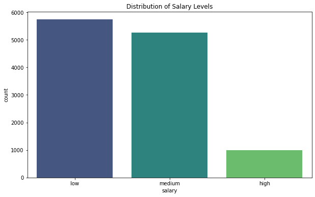
Distribution of Salary Levels
Shows the distribution of salary levels among employees.
This chart breaks down the distribution of salary levels among our employees. We see that a large chunk of employees fall under the 'low' salary bracket, with medium and high salary brackets being lesser in comparison. The number of employees that leave is significantly higher in the low salary bracket (41%) compared to the medium (17%) and high (7%) brackets.
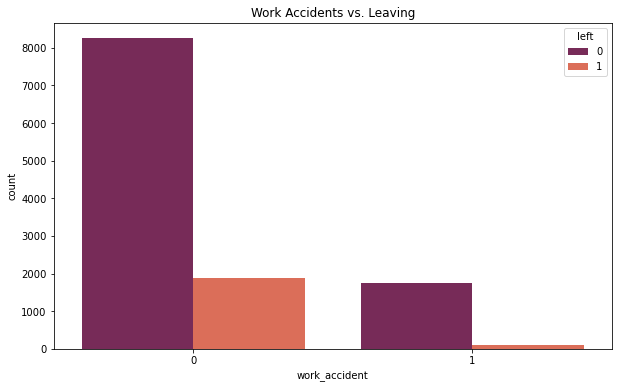
Work Accidents vs. Leaving
Illustrates the relationship between work accidents and leaving.
We also look at the impact of work accidents on employee turnover. Safety is crucial for job satisfaction and retention. Most employees have not experienced work accidents. A smaller proportion of those who experienced work accidents (14%) have left the company compared to those who haven't (23%).
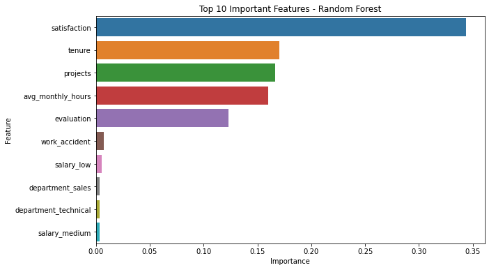
Top 10 Important Features - Random Forest
Displays the top 10 important features in the Random Forest model.
Using a Random Forest model, we identify the top factors that predict employee turnover. Satisfaction, tenure, and projects are key indicators. This tells us that how satisfied employees are, how long they've been with us, and how many projects they handle are crucial in understanding why they might leave. For instance, satisfaction level has a feature importance score of 0.34, making it the most significant factor.
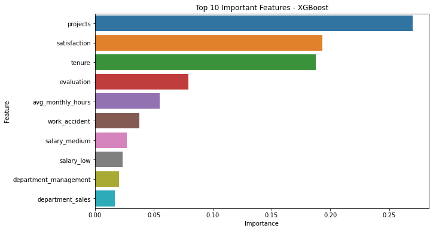
Top 10 Important Features - XGBoost
Displays the top 10 important features in the XGBoost model.
The XGBoost model provides similar insights, highlighting the importance of projects and satisfaction. This reinforces our understanding of the factors influencing employee turnover. Satisfaction level also has the highest importance in the XGBoost model, followed by number of projects and last evaluation scores.
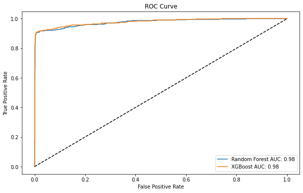
ROC Curve
Shows the ROC curve for Random Forest and XGBoost models.
The ROC curve shows us how well our models can predict employee turnover. Both models perform exceptionally well, with high accuracy, indicating their reliability in predicting which employees might leave. The ROC AUC (Area Under the Curve) for both models is approximately 0.98, indicating strong predictive power.
Model Comparison and Best Model Selection
Among the three models, XGBoost showed the highest accuracy (97.96%) and F1-Score (94%). This model balances precision and recall well, making it the best choice for predicting employee churn. While Random Forest also performed well, XGBoost's slight edge in predictive power and its ability to learn from previous errors makes it the most suitable model for this task.
Conclusion and Recommendations
Our analysis reveals that employee satisfaction, workload, tenure, and evaluation scores are critical in predicting turnover. To improve retention, Salifort Motors should focus on enhancing employee satisfaction, balancing workloads, and recognizing and promoting employees timely.
Recommendations:
Focus on improving employee satisfaction as it's a strong predictor for employee churn.
Monitor employees with specific tenure or those working on many projects as they seem to be at a higher risk of leaving.
Consider employee retention programs or initiatives.
Periodically survey employee satisfaction to intervene if a decline is noted.
Next Steps:
Further analyze what causes employee dissatisfaction.
Explore if providing additional perks or benefits to employees with certain characteristics (like many projects or longer tenure) can reduce churn.
About the Project
This project represents a thorough analysis of employee retention factors at Salifort Motors. It combines data science techniques with practical business insights to provide actionable recommendations for the HR department. For those interested, the complete code and analysis can be found in the accompanying Python code.
Note: This project was part of the Google Advanced Data Analytics Capstone course on Coursera. The dataset used in this project is credited to the course.